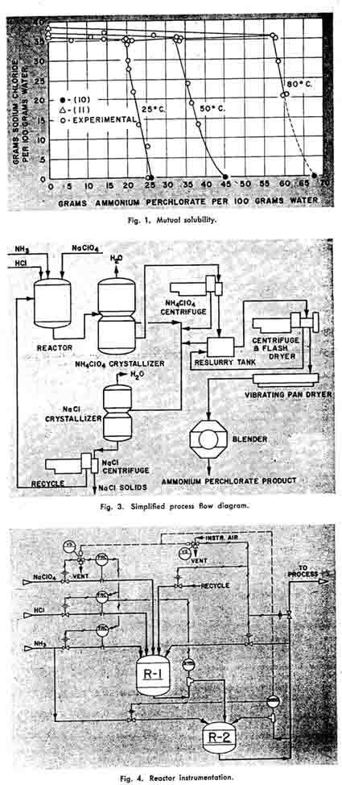
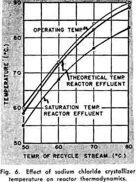
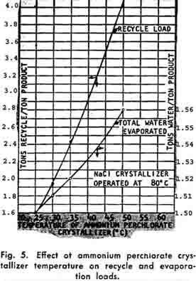

|
Military requirements and development work by the rocket industry looking toward a smokeless propellant with improved performance have led to greatly increased demand for ammonium perchlorate. This article describes an existing large-scale modern plant for its production, including details of the process, instrumentation, and operating variables. Preliminary experimental work on solubility, safety considerations, and materials of construction is also discussed.
|
|||||||||||||||||||||
|
large-scale continuous production of
|
|||||||||||||||||||||
|
AMMONIUM PERCHLORATE
Joseph C. Schumacher and David R. Stern American Potash & Chemical Corporation, Los Angeles 54,California
|
| ||||||||||||||||||||
|
With the advent of World War II, military interest in rocket power revived and attention was focused on new types of solid propellants These solid propellants are referred to as double-base and composite propellants. Potassium perchlorate was utilized as a solid oxidizer in composite propellants. This oxidizer created a smoke
|
|||||||||||||||||||||
|
problem, thus disclosing launching sites and presenting a serious problem for jet-assisted take-off (JATO) from aircraft carriers.
Development work by the rocket industry indicated that by substituting ammonium for potassium perchlorate the smoke problem could be eliminated with improved performance. Improved performance with ammonium perchlorate resulted from the generation of a greater volume of gas and from the lower average molecular weight of the exhaust products.
The propellant industry required material. Western Electrochemical Company started production of ammonium perchlorate on a very limited scale in 1943. Vick Chemical Company built a plant in 1943 at Greensboro, North Carolina, and Electric Reduction Company of Canada was in production during World War II. In 1948, Western Electrochemical Company built a pilot plant at Henderson, Nevada.
The large-scale production of a highly purified product of uniform particle size to give predictable and controllable burning characteristics was essential to the continued development of composite propellants; this was the problem presented to the perchlorate industry. Therefore, development work had to proceed simultaneously with production even though the methods of manufacture left much to be desired. Chemical engineering studies indicated the need for new information.
In April, 1951, Western Electrochemical Company, acting as prime contractor for the Government, initiated a program leading to the design and construction of an ammonium perchlorate plant with a capacity many times greater than any previous plant. Some descriptive material was presented on this installation in 1955 (1). This article deals with some of the more technical aspects of designing a large-scale plant for the production of ammonium perchlorate.
|
|||||||||||||||||||||
|
Chemistry
The previously cited patents {2, 3, 5, 6, 12) all covered the reactions of an ammonium salt with sodium perchlorate and the methods of separating the ammonium perchlorate and sodium salt formed. These salts react readily with sodium perchlorate in solution. Using the chloride as an example, the reaction may be represented stoichiometrically as follows:
NaClO4 + NH4C1-»NH4ClO4 + NaCl
(1)
This was the reaction utilized prior to the contemplated large-scale production in 1951. The choice of this particular salt to contribute the ammonium ion is based on the problem of separating the reaction products. It soon became apparent that ammonium chloride and sodium perchlorate were not available in sufficient quantity; new capacity, would have to be built to supply--iliese raw materials. The supply of sodium perchlorate was assured through the expansion of the sodium chlorate-sodium perchlorate electrochemical facilities at Henderson, Nevada. The production of ammonium chloride, per se, was eliminated by utilizing the following chemical reaction:
NH3 + HCl + NaCl04 -> NH4C104 + NaCl (2)
It is this reaction that is the basis of the present commercial production of ammonium perchlorate (13).
Mutual Solubility
Since relatively pure ammonium perchlorate product was desired, some data on the separation of the reaction products were necessary. The mutual solubility of ammonium perchlorate and sodium chloride was determined. These data are presented in Figure 1.
An examination of Figure 1 indicates that the variation of the solubility of sodium chloride with temperature in this
|
|||||||||||||||||||||
|
HISTORY
The steady increase in the consumption of ammonium perchlorate in rockets is indicative of its advantages as a solid oxidizer in composite propellants. Ammonium perchlorate has been used as a solid oxidizer in explosives since 1895, when Oscar Carlson (9) combined ammonium perchlorate with organics to make explosives. He was granted a British patent in 1897 (4). It was the potential use of ammonium perchlorate as an explosive that focused attention upon this compound. Numerous use patents have been filed since this early date.Carlson reported the manufacture of ammonium perchlorate at Mansboe as early as 1895, and pro
duction was officially reported in
Germany in 1901 (9). A number of inventors (2, 3, 5, 6, 12), have secured patents on the manufacture of this compound and their patents deal with the reactions of ammonium chloride ammonium sulfate, and ammonium nitrate with sodium perchlorate. "In. 1956, Schumacher (13) was granted a patent for the continuous production of ammonium perchlorate by reacting anhydrous ammonia with aqueous hydrochloric acid and sodium perchlorate. It is interesting to note that this is the only process patent issued during the 33-year period between 1923-1956.
|
|||||||||||||||||||||
|
steel plate and detonated. The brisance effect was indicated by the degree to which the lead cylinder was depressed. The sensitivity was determined by the size of the detonator required to initiate an explosion.
The effect of increasing moisture content on sensitivity is presented in Table 1 and visually in Figure 2. Cylinder No. 32 is the standard. Cylinder No. 4 illustrates the effect produced when the equivalent of 10 grams of mercury fulminate is detonated in potassium chloride. Cylinders 6, 7, and 13 represent depression when detonating ammonium perchlorate containing 0.02, 1.0, and 6.0 wt. per cent moisture, respectively. Cylinders No. 7, 8, 12, and 13 indicate no significant depression when compared to the standard detonator and the dry material.
These detonation experiments, along with the thermal decomposition and impact sensitivity tests, led to formation of the following guiding principles :
1. The impact sensitivity of high purity ammonium perchlorate is comparable to that of most high explosives.
2. Metallic contamination increases the sensitivity of ammonium perchlorate (i.e., certain metallic perchlorates are extremely sensitive).
3. Ammonium perchlorate is thermally stable below 150° C.
4. Contact of organic material with ammonium perchlorate constitutes a fire and explosive hazard.
5. The handling of solutions and wet solid ammonium perchlorate is not hazardous, but the drying processes present predominantly a fire, and possibly an explosive, hazard.
These principles were incorporated into the design of the plant. The handling and drying of the solid product were placed in two isolated units with duplicate equipment. The drying buildings contained a complete automatic deluge system and were separated according to specified quantity-distance tables.
Previous experience during pilot plant operations had indicated the type of packing and lubrication that would
|
give safe operation. Wet dust collection systems and the selection of equipment that would give a minimum of dusting were added safety features incorporated into the design.
Considerable research was done on the effect of feed stream impurities on the safety of the reaction.
Materials of Construction
Simultaneously with the researches on mutual solubility and safety, a corrosion testing program was initiated. The results of a number of total immersion tests are given in Table 2. On the basis of these tests and experience, the materials of construction were chosen. All welded piping and medium size vessels were to be 347 stainless. When delivery of large equipment was a problem because of the 347 stainless, a compromise was made on heat-treated 316 stainless. The sections of the plant that would be in contact with excess hydrochloric acid were constructed of glass lined steel or Hastelloy C.
Process Flow
A simplified flow diagram of the plant is presented in Figure 3. The process is characterized by four steps:.
1. Reaction of ammonia, hydrochloric acid, and sodium perchlorate.
2. Fractional crystallization of ammonium perchlorate.
3. Centrifugation of the ammonium perchlorate.
4. Fractional crystallization of by-product sodium chloride.
5. Drying, blending, and packaging of ammonium perchlorate.
Substantially all water entering the system must be removed from the sodium chloride crystallize; however, sufficient water must be present originally in the ammonium perchlorate crystallizer to prevent the crystallization of any sodium chloride. There must be good control over the water entering the system; this is accomplished at the heart of the process, namely, the reactor system.
|
|||||||
|
system is somewhat less than that of the salt by itself and varies only slightly with temperature. The solubility of ammonium perchlorate, of course, is temperature dependent. Therefore, a crop of ammonium perchlorate crystals can be obtained by cooling. After these crystals are removed, the mother liquor can be evaporated at an elevated temperature and a stoichiometric amount of sodium chloride crystallized. Evaporation of the mother liquor to remove sodium chloride increases the concentration of ammonium perchlorate in the mother liquor. This concentrated liquor can be recycled to complete the continuous reaction and crystallization process.
Safety
A re-evaluation of the hazards involved in the manufacture, storage, and transportation of ammonium perchlorate was a necessary part of the design of this large production unit. It was known that ammonium perchlorate presented a fire and explosive hazard and was susceptible to ignition or detonation by impact or by thermal shock (8), but an examination of the literature indicated that not all investigators were in agreement as to the properties of ammonium perchlorate. Consequently, a limited amount of experimental work was performed on the sensitivity, thermal decomposition, , and impact sensitivity.
"Minimum primer sensitive" tests were conducted utilizing an apparatus described by Cook and Talbot (7) which they used to determine the sensitivity of ammonium nitrate-hydrocarbon mixtures. A similar test, known as the "Small Lead Cylinder Test," is used by the U. S. Bureau of Mines (8).
A solid lead cylinder V/i in. in diam. and 3 in. high was supported on a rigid steel support. A steel plate 3 in. X 3 in. X lA in. was centered on top of tha lead cylinder. A cylindrical cardboard cartridge, V/t in. in diam. and 4 in. high, filled loosely with ammonium perchlorate and containing electric detonators of various strengths, was placed on the in.
|
||||||||
|
|
| |||||||||||||||||||||||||||||||||||||||||||||||||||||||||||||||||||||||||||||||||||||||||||||||||||||||||||||||||||||||||||||||||||||||||||||||||||||
Reactor System
The reactor system consists of two stages operated continuously and controlled automatically. The first stage consists of a 1,000-gal. glass lined reactor while the second stage consists of a 750-gal. glass" lined reactor. This reactor system contained a large part of the instrumentation in the plant. A simplified instrumentation diagram is . presented in Figure 4.
All feed streams are ratio controlled. 1 The discharge from the first stage reactor is continuously monitored for pH. The pH controller on this stream resets the controller on the hydrochloric acid stream; this it can do only within narrow limits, since this controller is on ratio control. The discharge from the second stage reactor is also on pH control with a secondary ammonia stream being fed into this vessel. If the pH drops too low, all the feed streams to the reactor are stopped, the feed to the crystallizer is stopped, and the reactor charge is automatically recycled until the pH is corrected manually or auto-matically. The temperature of the reactors is controlled at 90°C by mixing steam and water in the vessel-jackets. All controllers have high and low alarms which are audible and visible. The instruments are grouped into a console control panel and the whole reaction system, along with the crystallizers, is under "push button" control at this point.
AMMONIUM PERCHLORATE CRYSTALLIZER
Since the reactor system is a constant volume 'system, the feed rate to the ammonium perchlorate crystallizer is constant. This stainless steel crys-tallizer is operated continuously, cooling the reactor effluent from 90° C. to 35° C. by vacuum evaporative cooling. The feed liquor is mixed continuously with a large amount of circulating mother liquor and the resulting mixture is passed into a vaporizer, where the solution supersaturates. The solution then flows upward through a dense bed of crystals, relieving its supersaturation on the crystal suspension. A slurry containing the desired size distribution is removed continuously.
AMMONIUM PERCHLORATE CENTRIFUGATION
The slurry is fed to a centrifuge . where mother liquor is removed continuously and the crystals are washed. The washed crystals are discharged directly into a tank of saturated ammonium perchlorate solution. This saturated solution serves to reduce the chloride concentration of the solids and as a transfer medium for the ammonium perchlorate to the drying operation located some distance away. The wash water, mother liquor, and crystallizer overflow are collected together and pumped to the sodium chloride crystallizer.
SODIUM CHLORIDE CRYSTALLIZER
Concentration of the mother liquor, which is depleted in ammonium perchlorate, is accomplished in a vacuum evaporator with an external heat exchanger. This crystallizer works on the same principle as the ammonium perchlorate crystallizer; however, no attention is paid to particle size other than to secure a particle size that will centrifuge and wash easily. The sodium chloride slurry from the crystallizer is also fed continuously to a centrifuge.
SODIUM CHLORIDE CENTRIFUGE
The solids discharged from this centrifuge can be recovered as a solid or dissolved and pumped to waste. At present the solids are dissolved. The wash water and mother liquor from the centrifuge are mixed in a surge tank with the crystallizer overflow. The solution from this surge tank- is rich in perchlorate and consequently is pumped to the reactor system as recycle. Loss of mother liquor with the sodium chloride solids discharged at this point can lower the over-all chemical efficiency. The washed sodium chloride discharged from the continuous centrifuge averages better than 99.0 per cent pure.
Operating Variables
Since a recycle stream rich in chloride has been added, a certain water content or balance must be maintained to prevent any sodium chloride from separating out in the ammonium perchlorate crystallization. The quantity of water necessary is a function of the temperature of operation of the crystallizers, the mutual solubilities of the salts, the amount of water entering the whole plant cycle, and the composition and quantity of the recycle stream.
|    |
TEMPERATURE LEVELS OF OPERATION
Since all of the water entering the system must be evaporated, it is desirable to keep water additions to a minimum. If the crystallizer were cooled to a low temperature, the quantity of recycle saturated with chloride would be low; however, it would be necessary to add larger quantities of water to prevent crystallization of sodium chloride, since the solubility of the sodium chloride decreases slightly with temperature. Allowing the tempera
ture of the ammonium perchlorate crystallizer to approach that of the sodium chloride crystallizer would increase the quantity of recycle appreciably. This larger stream would be saturated with sodium chloride and large quantities of water would be necessary to suppress its solubility. These considerations indicate that an optimum temperature for the ammonium perchlorate crystallizer in relation to the sodium chloride crystallizer may exist so that a minimum quantity of evaporation would be necessary. However, calculations indicate that this optimum is a function of the degree of saturation approached with respect to each unsaturated component in each crystallizer. If an exit composition of 34.0 g. NaCl/100 g. of water from the ammonium perchlorate crystallizer is set as a limit, and the exit stream from the sodium chloride crystallizer is to be undersaturated by the same amount with regard to ammonium perchlorate, the water evaporation curve is flat. Figure 5 illustrates the effect of the ammonium perchlorate crystallizer temperature on the recycle and evaporative loads. A temperature of 35° C. was selected for ammonium perchlorate crystallization, since this was the lowest temperature feasible without refrigeration.
Table 3 illustrates the effect of the operating temperature of the sodium chloride crystallizer on the evaporation load and recycle loads. An examination of these data indicates that lowering the temperature of the salt crystallizer is not critical if the perchlorate crystallizer is maintained at a sufficiently low temperature, but that raising the temperature of the perchlorate crystallizer and lowering the temperature of the salt crystalizer simultaneously do increase the evaporation load and can increase the recycle load appreciably. Since the perchlorate crystallizer temperature is limited by cooling water conditions, the lower temperature level is fixed. Table 3 also indicates that the higher the temperature of operation of the sodium chloride crystallizer, the less water is to be evaporated and the less the amount of recycle; however, the corrosive nature of this solution places an upper temperature limitation on this unit operation. The original design was for a temperature of 80 C. Severe corrosion of the 316 heat exchanger on the sodium chloride crystallizer has necessitated the lowering of this temperature.
REACTOR
Startup
Characteristics of Product
Acknowledgment
Literature Cited HIT THE BACK BUTTON ON YOUR BROWSER
Since recycle is returned to the reactor (See Figure 3), the temperature and quantity of this recycle influence the reactor heat balance. The effect of the recycle on the reactor operating conditions is presented in Figure 6. An examination indicates that the exothermic heat of reaction liberated, combined with the recycle stream, maintains the reactor effluent above the saturation temperature.
The startup of the plant went smoothly, owing to considerable advance preparation and planning. All instruments were calibrated and put into operation prior to startup. All vessels, pumps, centrifuges, and crys-tallizers were also tested before startup.
Product was discharged from the ammonium perchlorate centrifuge within three days after startup. This first product did not meet the specifications with regard to particle size, v but the operation of the full-scale continuous automatic reactor system was successfully demonstrated. Within several months, operating personnel had turned out product of the desired characteristics for solid propellant
fuel.
Since burning rates and stability are of prime importance to rocket engineers, the product specifications are very rigid with regard to chemical purity and particle size. Tables 4 and 5 present data illustrating the characteristics of the product consistently produced from this plant; these data are typical assays of some lots. Emphasis is placed on the 99.9 per cent purity and the extremely low moisture content. Product has also been made to meet other particle size specifications.
The complete development, design, and construction of this plant represent the combined efforts of a number of individuals. The authors appreciate the contributions made by the operating staff of American Potash & Chemical Corporation, and the permission of the Department of the Navy to publish this article on the installation which is part of the United States Naval Industrial Reserve.
1. Anon., "Making a Hazardous Chemical: Ammonium Perchlorate," Chem. Engr., 62 (12) 334-337 (1955).
2. Aanensen, D., Brit. Patent 121,727 (October 30, 1919).
3. Alvisi, U., Ger. Patent 103,993 (June 10,1898).
4. Carlson, O. F., Brit. Patent 10,362 (July 3, 1897).
5. Carlson, O. F„ U. S. Patent 985,724 (February 28, 1911).
6. Carlson, O. F., Swed. Patent 44,704 (September 25, 1916).
7. Cook, M. A., and Talbot, Er L, Ind. & Engr. Chem., 43, 1098 (1951). 8.- Davis, T. L, "Chemistry of Powder and Explosives," New York. John Wiley & Sons, Inc. (1956).
9. Kershaw, J. B., "Die Elecfrolytische Chloratindustrie," 29, 67-69 (1905).
10. Kirk, R. E., and OJhmer, D. F., "Encyclopedia of Chemical Technology," New York, Interscience Encyclopedia, Inc. (1949).
11. Longe, N.'A., "Handbook of Chemistry,"Sandusky Handbook Publishers, (1946).
12. Long, R. A., U. S. Patent 1,453,984 (May 1, 1923).
13. Schumacher, J. C, U. S. Patent 2,739,873 (March 27, 1956).